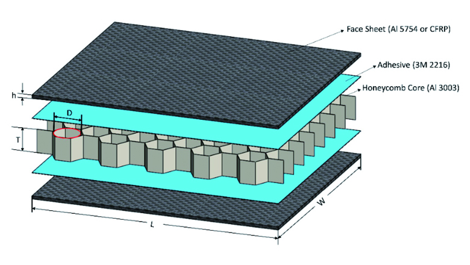
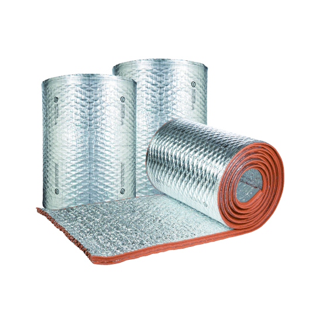
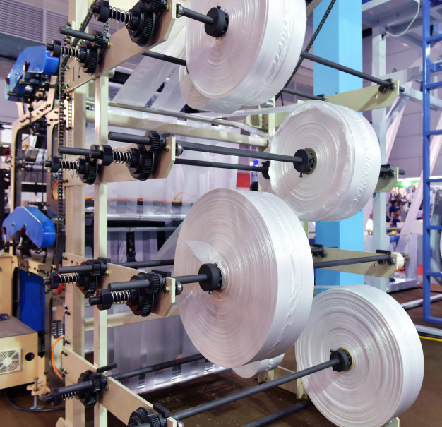
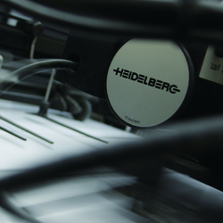

건축자재
-

- Honeycomb 단열재
- 알루미늄 재질로 만들어진 벌집 모양의 구조로 강도와 단열기능이 높아 건축용 내외장재 및 단열재로 많이 활용되고 있습니다. 사용온도 에 따라 100℃ 이하의 보냉재, 100 ∼ 500℃의 보온재, 500 ∼ 1,100℃의 단열재, 1,100℃ 이상의 내화 단열재로 나뉩니다.
-

- 반사단열재
- 건축물내부와 외부의 복사열을 차단하여 여름철 냉방, 겨울철 난방효율을 향상시키는 단열재의 핵심소재로써 알미늄 표면 방사율을 유지하며 가공성을 높인 복합필름입니다. 보호코팅 후에도 표면 방사율 0.05이하를 유지 하여 건축물의 복사열을 효율적으로 차단
산업용 포장재
각종 산업 자재용 포장재로써 내용물의 특성 및 고객 사용에 적합한 재질 구성한 제품입니다. 내충격성이 우수한 대용량 봉투로 내용물 충진 후에도 직립성이 우수한 제품과 표면에 대전 방지성을 부여한 전자제품 포장재 등이 있습니다.

-
- 레진백(Resin Bag)
- 중량물 봉투로써, 제품 적재 후 안정성과 파대강 도가 우수 한 재질로 구성되었으며, 내용 물 충진 후에도 직립성 및 내용 물 보존성이 우수합니다.
-
- 전자부품용
- 반도체 및 전자 부품 포장재로 써 포장재에 대전 방지 기능을 부여하여 유통시 생기 는 정전기에 의 한 부품 손상을 방지하는 산업 포장재 입니다.
-
- 실리콘/활물질백
- 리튬 2차전지에 사용하는 양 극 활물질(LCO, NMC, LMO, LFP) 파우더 포장재로 산소 및 수분 차단 성능이 이 월등한 산업 포장재 입니다.
이형필름
Clean 무진 환경 속 정밀 박막 Coater에서 다양한 산업군의 특화된 Silicone 코팅필름과 전자소재 Application의 캐리어용 필름, 고기능성 광학용 코팅 필름을 생산하고 있습니다.

- 우수한 잔류 점착률과 균일성
- 다양한 이형력과 고기능성 구현
- 안정성을 강조한 고품질 시스템
- 100Class 무진 관리 시스템
| Type | PET |
적용두께 (um) |
이형력(g/m^2) |
잔류 점착률 (%) |
|
|---|---|---|---|---|---|
| 산업용 | 투명/반투명 | 20, 25, 38, 50, 75, 100, 125 | 3~500 | 90% 이상 | |
| 전자소재용 | 전자 Tape용 | 투명/반투명 | 20, 25, 38, 50, 75, 100, 125 | 3~500 | 90% 이상 |
| Anti-Static용 | 투명/반투명 | 20, 25, 38, 50, 75, 100, 125 | 3~500 | 90% 이상 | |
| Color PET용 | Blue, Red, Green, Yellow | 20, 25, 38, 50, 75, 100, 125 | 3~500 | 90% 이상 | |
| 광학용 | OCA용 | 투명 | 30, 50, 75 | 3~30 |
(열 수축률) MD : 2% 이하 TD : 1% 이하 |
| 편광판용 | 투명 | 38 | 7~15 | ||
| MLCC용 | 투명 | 30, 38 | 4~6 | ||